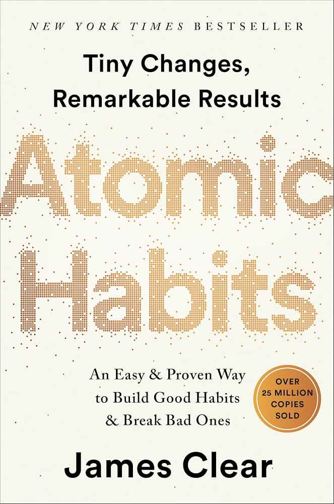

Atomic Habits (James Clear, Avery, October 2018) argues that remarkable results come from small, consistent habits compounding over time rather than from one dramatic change. The author opens with the story of his own recovery from a serious sports injury and uses it to frame the idea that a tiny improvement repeated daily is easy to dismiss in the moment but large across months and years.
The practical engine is the habit loop (cue, craving, response, reward) and its translation into the Four Laws of Behavior Change: make it obvious, make it attractive, make it easy, make it satisfying. Each law has an inverse for breaking a bad habit. The book hangs a menu of tactics on these laws, such as habit stacking, implementation intentions, environment design, temptation bundling, the Two-Minute Rule and habit tracking.
Underneath the tactics is an identity claim: every repetition is a vote for the kind of person you are becoming, so durable change starts from who you want to be, not only what you want to achieve.
The author opens with his own story of a serious injury in his teens and the slow, unglamorous rebuild that followed, built on small daily habits rather than a dramatic comeback. This anecdote frames the whole book.
Argues that improvement of about 1% a day compounds dramatically, and that the same maths works in reverse for small daily slips. A widely discussed example in summaries is the British cycling team and its 'marginal gains' approach, and the chapter contrasts habits (systems) with goals (one-off outcomes).
It also introduces the idea that progress is often invisible at first, before an accumulated effort shows up.
Describes three layers of change: outcomes (what you get), processes (what you do) and identity (what you believe). The claim is that lasting change works best from the inside out, starting with identity.
Each repeated action is framed as a small vote for the kind of person you want to be.
Introduces the habit loop of cue, craving, response and reward, and previews the Four Laws as the practical version of it. The loop is presented as neutral: it builds good and bad habits equally.
This chapter is the hinge between the opening argument and the tactics that follow.
Per summaries, this chapter is about how much behaviour runs on cues we no longer consciously notice, and why awareness has to come before change. It introduces the Habits Scorecard, a written inventory of your current habits, and the idea of saying aloud what you are about to do to bring autopilot into view.
Covers implementation intentions (decide when and where you will act) and habit stacking (attach the new habit to an existing one). Both turn a vague wish into a specific, cued plan.
Argues that context shapes behaviour more than motivation does. The practical advice is to make the cues for good habits visible and the cues for bad habits hard to see, by changing the layout of your space.
Reframes self-control as less about heroic resistance and more about avoiding temptation in the first place. For breaking habits, the inverse of the first law applies: make the cue invisible.
Explains that anticipation, not just reward, drives motivation, and offers temptation bundling: pairing something you need to do with something you want to do so that the wanted thing makes the needed one attractive.
Looks at how much we copy the people around us, in three groups: the close, the many and the powerful. The practical conclusion is to join groups where your target behaviour is normal.
Argues that habits serve an underlying craving rather than the surface behaviour, and that reframing what a habit means to you can change how attractive it feels. The motivation-ritual idea appears in summaries of this chapter.
Takes aim at the 'habits take 21 days' idea, pointing to research showing the time to automaticity varies widely by person and behaviour. The emphasis is on repetitions rather than elapsed time, plus the rule of not letting a miss turn into two.
People drift to the lowest-friction option, so the job is to cut friction for habits you want and add it for habits you do not. The chapter is full of small environment-prep tactics.
Scale a habit down to something that takes about two minutes, so that showing up becomes automatic first. The point is the gateway behaviour, not the output in those two minutes.
Covers commitment devices and one-time actions that lock in future behaviour, along with automation. The idea is to spend effort once so you do not have to keep deciding.
The headline principle is that what gets rewarded gets repeated. Because good habits often pay off late and bad habits pay off now, the chapter suggests adding a small immediate reward to the good ones.
Makes the case for habit tracking: a visible record of progress is satisfying and keeps you honest. Summaries also mention cautions, such as not letting the metric replace the behaviour.
Introduces the habit contract and the use of an accountability partner, which turns a distant private cost into an immediate social one.
Acknowledges that genetic differences make some habits and arenas easier for some people, and advises choosing the games where your traits give you an edge. I have summarised only the general theme.
Motivation peaks on tasks just beyond your current ability: not too easy, not too hard. The chapter also names boredom, rather than failure, as a major threat to long-term habits.
A closing caution that automatic habits can go unexamined and plateau. The answer is deliberate practice and periodic reflection and review so you keep improving.
Returns to the opening theme: small habits compound, and lasting results come from sustaining them over time. Where the book lands on identity is the same thread from Chapter 2; I have not verified more detail than the title and general theme.
The book's core is one loop and four laws that map onto it. Each stage gets the same treatment below: what it is, how to build with it, how to break with it, and where it goes wrong. The structure follows published descriptions of the book; scenarios are my own illustrations, not quotations.
The loop is the diagnosis; the Four Laws are the treatment. If a habit is not happening, one of the four stages is failing: you are not noticing the cue, not wanting the thing, finding it too hard, or not getting anything back. That makes the loop a useful troubleshooting checklist, which is its main practical value.
Ideas in this law are awareness (the Habits Scorecard), implementation intentions (when and where), habit stacking (after X, do Y) and environment design so the cue is in your line of sight.
Specific plans beat good intentions, and the place you put things is a design decision, not an accident.
Cravings are the engine. The book's tools are temptation bundling, joining a culture where the behaviour is normal, and reframing what the habit means.
You do not get attraction from willpower; you borrow it from things you already want and groups you already belong to.
Behaviour follows the path of least resistance. The book recommends reducing steps, priming the environment, scaling a habit to a two-minute version, and using one-time commitments or automation.
Showing up is the skill. Ambitious versions come later, once the behaviour is automatic.
Because good habits often pay off late, the fourth law adds something that feels good now. Tools in the book include habit tracking, immediate reinforcement, and habit contracts with a partner.
The brain favours immediate feedback, so a good habit needs a good-feeling moment attached to it now.
| 1st: Obvious | 2nd: Attractive | 3rd: Easy | 4th: Satisfying | |
|---|---|---|---|---|
| Loop stage | Cue | Craving | Response | Reward |
| Question | Will I notice it? | Do I want it? | Can I do it right now? | Does it feel good afterwards? |
| Signature tools | Scorecard, implementation intention, habit stacking, environment | Temptation bundling, culture, reframing | Two-Minute Rule, friction, commitment devices | Tracking, instant reward, habit contract |
| To break a habit | Make it invisible | Make it unattractive | Make it difficult | Make it unsatisfying |
| If it is failing | "I forgot" | "I can't be bothered" | "It's too much hassle" | "I can't see the point" |
| Typical trap | Relying on memory | Treating it as a pep talk | Starting too big | Tracking becomes the goal |
Two things to hold on to. First, the laws are ordered: if you do not notice the cue, the other three never get a chance. Second, the inversions are not mirror images in practice; removing a cue is usually far easier than making a habit unattractive, which is why I treat the first inversion as the strongest.
A self-reflection tool of my own, not one from the book. Pick one habit and slide each item from 0 (not at all true) to 10 (fully true).
Five scenarios, all invented by me. Tap the law each fix really belongs to.
The book's main practical ideas gathered in one place. The practice plan at the bottom is my own suggestion, not the author's.
List your daily habits and mark each as helpful, harmful or neutral, without judgement. It is a way to see the autopilot before changing it.
Put the cues for good habits in sight and the cues for bad habits out of sight. Change the room instead of relying on willpower.
Pair something you need to do with something you want to do, so that the wanted thing makes the needed one attractive.
Scale a habit to a version that takes about two minutes, so showing up becomes automatic before you scale it back up.
Decide once, in advance, so the future you does not have to rely on willpower.
Pair habits with periodic review so automatic behaviour keeps improving rather than coasting.
Atomic habit.
Habit Loop.
Four Laws of Behavior Change.
Habit stacking.
Temptation bundling.
Two-Minute Rule.
Goldilocks Rule.
Paraphrases, not direct quotes.
You get what your systems produce, not what your goals promise.
Each repetition is a small vote for who you are becoming.
Tiny gains compound, in either direction.
Change the room before you try to change yourself.
| Category | Claude | Dan | Why Claude scored it that way |
|---|---|---|---|
| Ideas | 3.5 | 5.0 | The Four Laws are a clean packaging of known behavioural ideas (cues, friction, reinforcement). The synthesis and identity framing are valuable, but the book is more a well-organised gathering than a new discovery. |
| Readability | 4.5 | 5.0 | Short chapters, a consistent structure and memorable stories; Goodreads readers rate it highly (83% at 4 or 5 stars). |
| Actionability | 4.5 | 5.0 | Almost every chapter ends in a tool you can try the same day, and the laws double as a troubleshooting checklist. |
| Evidence | 3.0 | 3.0 | Heavy on anecdotes and selected studies, with critics pointing to overstated certainty. I have not audited the citations myself. |
| Category average | 3.88 | 4.50 | Claude's overall is 3.9, about 0.4 below the Goodreads average of 4.30, which is within the usual range. The gap comes mostly from Evidence and Ideas, where I weigh rigour and originality more than the average reader seems to. Dan's overall of 5.0 sits 0.5 above his own category average of 4.50. The biggest gap between Dan and Claude is Ideas (5.0 vs 3.5); he scores Readability and Actionability higher (5.0 vs 4.5 each) and matches Claude on Evidence (3.0). |
Categories are the same four used for every review: Ideas, Readability, Actionability, Evidence.
Goodreads (read 11 Nov 2026): average 4.30 from 1,445,738 ratings and about 84,500 written reviews. The page shown was the Kindle edition of Atomic Habits: An Easy & Proven Way to Build Good Habits & Break Bad Ones by James Clear; Goodreads merges editions and the rating count confirms it is the main entry.
What you may have missed: A Substack critic (Adam Ho) argues the compounding metaphor is oversimplified because many gains show diminishing returns, and that 'never miss twice' assumes steady energy; on a drained day a rest can be a reset, not a failure.
Also, critique of behavioural-science replication in general (The Behavioral Scientist) is relevant to how firmly you should hold any single study cited in a habits book, though that article does not discuss Atomic Habits directly. I did not find a systematic academic review of the book itself.
Dan rates Atomic Habits 5 out of 5, and says that if he could give a 6 out of 5, this would be the one. He calls it probably the best book he has read of all the books in this library. He thinks he needs to read it again, a few more times, to keep reminding himself of the processes that have been so life-changing for him.
He scores Ideas, Readability and Actionability a full 5. Evidence is the one thing he is unsure about: it is probably not a highly evidence-based book, so he gave it a 3.
What he values: being 1% better every day without trying to build yourself up so much that you overwhelm yourself, plus habit stacking and moving away from bad habits. It was a big aha moment when he first read it, and he keeps going back to it, referencing it, and telling other people they need to read it.
Written up from Dan's own words (11 Nov 2026). The page's rating scale tops out at 5, so his overall is recorded as 5.0. His view stands apart from the Claude and reader views above.
Treat behaviour change as a design problem. If a habit is not sticking, ask which stage of the loop is failing (cue, craving, response or reward) and fix that stage, rather than trying to summon more willpower.
Atomic Habits is a practical, readable guide whose main strength is turning a familiar subject into one clear model with tools attached. Readers rate it very highly; my own scores are a little lower because the evidence is selective and the originality lies more in packaging than discovery.
Start small: pick one habit, run it through the four laws, and shrink it until it survives a bad day.